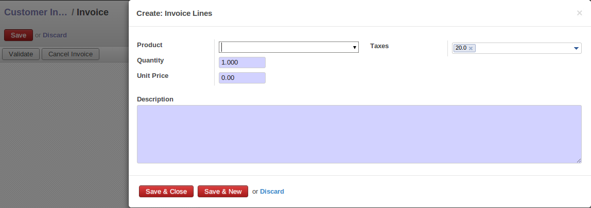

<section class="oe_container oe_dark">
    <div class="oe_row oe_spaced">
        <h2 class="oe_slogan">Customer Invoice lines in form view</h2>
        <h3 class="oe_slogan">Change default input of customer's invoice lines</h3>
        <div class="oe_span6">
            
        </div>
        <div class="oe_span6">
            <p class='oe_mt32'>
When you will install this module, this will change the default customer's invoice lines input.
<br/>
To create a new line, this will open a form view instead of creating lines in tree view.
            </p>
        </div>
    </div>
</section>